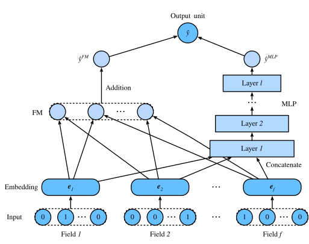
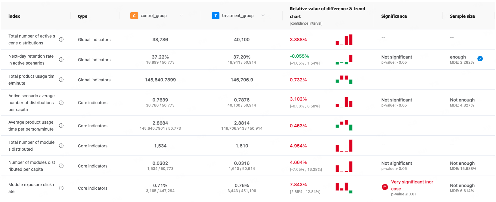

Application of DeepFM Model in AppS
In the field of recommendation systems, efficiently combining low-order and high-order feature interactions to improve prediction accuracy has always been a key challenge. The DeepFM model offers a solution that combines memory capacity and generalization ability by integrating Factorization Machines (FM) with Deep Neural Networks (DNN). This article will introduce the application and effectiveness of DeepFM in the AppS business.
Introduction
DeepFM (Deep Factorization Machine) is a recommendation system model that combines factorization machines (FM) with deep learning. It aims to capture both low-order and high-order feature interactions simultaneously. The architecture of DeepFM consists of two components: the FM component and the Deep component. The FM component is used to capture low-order feature interactions, while the Deep component learns high-order feature interactions through a multi-layer perceptron (MLP).
FM Module
- Function: The FM module focuses on capturing second-order interactions between features. It leverages feature embeddings to compute interaction terms and efficiently represent relationships between sparse features.
- Advantage: By modeling low-order interactions, the FM module effectively handles sparse data, making it particularly suitable for scenarios with a large number of sparse features.
DNN Module
- Function: The DNN module is used to learn high-order feature combinations. Through a multi-layer neural network, DNN can capture complex nonlinear feature interactions.
- Customization Capability: Users can design the network structure of the DNN according to specific needs, including the number of layers, the number of neurons in each layer, activation functions, and regularization strategies.
- Advantage: With a flexible structure design, the DNN module can generalize to new feature combinations and improve the model's adaptability to different data distributions.
Benefits of DeepFM over FM
-
Comprehensive Feature Interaction Capability: Traditional FM models mainly focus on second-order interactions between features, whereas DeepFM can effectively capture high-order feature interactions by introducing a deep learning component, thus improving recommendation accuracy.
-
No Need for Manual Feature Engineering: DeepFM can automatically learn feature interactions, reducing the reliance on manual feature engineering, which is particularly useful for handling complex, large-scale datasets.
-
Shared Feature Embeddings: The feature embedding layer in DeepFM is shared between the FM and Deep components, making the model more efficient in capturing feature interactions while reducing the number of model parameters.
Advantages of DeepFM
- Comprehensive Capability: DeepFM combines the strengths of FM and DNN, allowing it to learn both low-order and high-order feature interactions without the need for feature engineering.
- Model Simplicity: Compared to training FM and DNN separately and then combining them, DeepFM maintains model compactness and efficiency by sharing the feature embedding layer.
- Wide Applicability: Due to its flexibility and strong expressive power, DeepFM is widely used in fields such as ad click-through rate prediction and recommendation systems.
Example Code for Developing DeepFM with PyTorch
In the following example, we will develop the FM and DNN modules separately and then combine them into a complete DeepFM model.
import torch
import torch.nn as nn
import torch.nn.functional as F
class DeepFM(nn.Module):
def __init__(self, field_dims, embed_dim, mlp_dims):
super(DeepFM, self).__init__()
self.embeddings = nn.ModuleList([
nn.Embedding(dim, embed_dim) for dim in field_dims
])
self.linear = nn.Linear(sum(field_dims), 1)
self.fm = FM(embed_dim)
self.dnn = DNN(sum(field_dims) * embed_dim, mlp_dims)
def forward(self, x):
x_emb = [emb(x[:, i]) for i, emb in enumerate(self.embeddings)]
x_emb = torch.cat(x_emb, dim=1)
x_linear = self.linear(x)
x_fm = self.fm(x_emb)
x_dnn = self.dnn(x_emb.view(x_emb.size(0), -1))
return x_linear + x_fm + x_dnn
class FM(nn.Module):
def __init__(self, embed_dim):
super(FM, self).__init__()
self.embed_dim = embed_dim
def forward(self, x):
square_of_sum = torch.sum(x, dim=1) ** 2
sum_of_square = torch.sum(x ** 2, dim=1)
return 0.5 * torch.sum(square_of_sum - sum_of_square, dim=1, keepdim=True)
class DNN(nn.Module):
def __init__(self, input_dim, dims):
super(DNN, self).__init__()
layers = []
for dim in dims:
layers.append(nn.Linear(input_dim, dim))
layers.append(nn.ReLU())
input_dim = dim
self.layers = nn.Sequential(*layers)
def forward(self, x):
return self.layers(x)
# Example usage:
field_dims = [10, 10, 10] # Example field dimensions
embed_dim = 10
mlp_dims = [64, 32]
model = DeepFM(field_dims, embed_dim, mlp_dims)
# Dummy input
x = torch.randint(0, 10, (4, len(field_dims))) # Batch size 4
output = model(x)
print(output)
Application
1. Feature Embedding Configuration
In our DeepFM model, the embedding dimension for each feature is set to 10. This configuration effectively captures low-order feature interactions and provides a solid foundation for subsequent high-order feature learning through the deep neural network.
2. Model Training and Optimization
Building on our experience with FM model training, the DeepFM model excels in combining memory and generalization. The FM component captures low-order feature interactions, while the DNN component learns high-order feature combinations. This combination achieves excellent results in the current business scenario.
-
Memory Capability: DeepFM uses the FM component's low-order interactions to capture known, stable feature combinations.
-
Generalization Capability: Through the DNN component, DeepFM can discover new, potential high-order feature combinations, enhancing the prediction of user behavior.
3. AB Testing Results
In the "Guess You Like" module, deploying the DeepFM model led to a 4.66% increase in average distribution per user. This result indicates that DeepFM significantly enhances the quality of personalized recommendations for users.
